Examples
The following section serves as a showcase of possible applications of GilaElectromagnetics. Every one after the basic example assumes that the operators presented in the usage section were defined beforehand. Only the most important parts of the source code that made the shown figures are presented here, otherwise this section would be unnecessarily long. However, complete scripts are available in the examples/ folder of the package repository. They cover everything in this showcase, including the code to produce the figures.
Basic Example
The following creates a self Green's function that acts on a vector of random sources. The Green's function acts in a domain that is 8x8x8 cells, each with a size that is 1/32 of a wavelength. The domain is thus 1/4 of a wavelength in each direction.
using GilaElectromagnetics
num_cells = (8, 8, 8)
cell_size = (1//32, 1//32, 1//32)
has_gpu = false # Set to true if you have a CUDA enabled GPU
const T = ComplexF32 # Set to ComplexF64 for double precision
G = GlaOpr(num_cells, cell_size; useGpu=has_gpu, setTyp=T)
source_vec = rand(eltype(G), size(G, 2))
field_vec = G * source_vec # Apply the Greens operator to the source vectorDipole in a cube
For all cases presented below (dipole example, wave guide example, thin film example), the following packages must be imported:
# Computation
using Base.Threads
using FFTW
using IterativeSolvers
using LinearAlgebra
using LinearAlgebra.BLAS
using Random
using ..GilaOperators # if the operators are in an included GilaOperators.jl file
using CUDA
# Plotting
using GLMakie
using GeometryBasics
using Colors
using PrintfAlso, to ensure consistency for packages that themselves use Random, the following line is included:
Random.seed!(0)All code sections presented below are written for maximum clarity. They could be rewritten more concisely, which could be better for certain users.
This first example is the simplest. A single electric dipole $\textbf{p}_i$ will be placed approximately in the middle of a dielectric cube, itself embedded in empty space. The objective is to visualize the resulting electric field. Both the intensity and the real part (in every direction) are of interest.
Volume and medium
To begin, we define most of the relevant physical quantities to describe the system:
# dimensions
num_cells_side = 32 # defines cube of 32x32x32
num_cells_side_vac = 128 # defines cube of 128x128x128
cells_per_wavelength = 32
# medium
χ_fill = ComplexF32(1.5 + 0im)
# source (dipole)
pos_x = 16
pos_y = 16
pos_z = 16
dip_x = 0
dip_y = 0
dip_z = 30
# visualisation
dst_slice = 64Special care must be taken when specifying the type of complex variables while using Gila. The user must either use ComplexF32 for speed and memory gains, or ComplexF64 for accuracy gains. It is not recommended to mix these two types in one single script, hence why their declaration is explicit in the code presented.
Next, the computation using Gila can be done, but only for the inside of the dielectric. We cannot just solve for both the dielectric and the empty space, because the solver doesn't converge for χ = 0. We can use the exact same logic as presented in the scattering section of the usage page:
# memory for volume
cells = (num_cells_side, num_cells_side, num_cells_side)
scale = (1//cells_per_wavelength, 1//cells_per_wavelength, 1//cells_per_wavelength)
coord = (0//1, 0//1, 0//1)
# memory for medium (small cube of dielectric)
χ = fill(χ_fill, num_cells_side, num_cells_side, num_cells_side)
# Lippmann-Schwinger operator
ls = LippmannSchwinger(cells, scale, χ; set_type=ComplexF32)
# memory for dipole
p_i = zeros(eltype(ls), num_cells_side, num_cells_side, num_cells_side, 3)
p_i[pos_x, pos_y, pos_z, :] = [dip_x, dip_y, dip_z]
# solution for total polarisation current density
p_t = solve(ls, p_i)Embedding in empty space
We now have p_t, which is only present in the dielectric cube. A trick to solve for the fields is to embed this array in a bigger one filled with zeros, which represents empty space. It makes physical sense because where there is no matter there cannot be presence of a dipole. This can be implemented in the following way:
# memory for volume with empty space
cells_vac = (num_cells_side_vac, num_cells_side_vac, num_cells_side_vac)
# position of small cube within bigger one
# this is specifically to position it near the middle
pos_cube_begin = Int((num_cells_side_vac / 2) - (num_cells_side / 2))
pos_cube_end = Int((num_cells_side_vac / 2) + (num_cells_side / 2) - 1)
# insert the p_t vectors in the empty space
p_t_vac = zeros(ComplexF32, num_cells_side_vac, num_cells_side_vac, num_cells_side_vac, 3)
p_t_vac[pos_cube_begin:pos_cube_end, pos_cube_begin:pos_cube_end, pos_cube_begin:pos_cube_end, :] .= p_tWith the sources embedded in empty space, nothing prevents the generation of a Green's operator. Thus, the field can be obtained like this:
# memory for Green's function
G_0_vac = load_greens_operator(tuple(cells_vac...), scale; set_type=ComplexF32)
# obtaining the electric field
e_t_vac = G_0_vac * p_t_vacThis is what we aimed to obtain. All that remains is to visually represent this field.
If one wants to define $\chi$ with some empty space cells, it is possible to give a very low susceptibility value to approximate $\chi = 0$. Of course, this comes at a loss of accuracy, but it might be good enough depending on the use case when empty space is approximated at $\sim 10^{-5}$.
In the future, a preconditionner for the solver will allow materials of value $\chi \leq 0$ to have a solution that converges, making the workarounds irrelevant.
Visualization
As specified, the visualization source code for the figures is available, but is not as relevant as the solving steps in the context of the GilaElectromagnetics package. Quick tips will be provided to guide towards a clear representation of the physics, but the presentation of the results will be straightforward.
The central package used for visualisations is Makie.jl. It allows for the most options compared to it's alternative when it comes to interactivity and customizability. As seen in the list of packages above, GLMakie is used as the choice of backend package to harness the power of a dedicated graphics card with OpenGL.
We have obtained a 3D vector field in the previous section. The first way one would think of representing it visually is with a function such as arrows, where every cell has its electric field vector represented. The problem with the 3D nature of the field is that such a representation gets extremely cluttered. It is advised to choose a 2D plane within the 3D field as a way to declutter the view.
It is not guaranteed however that the vectors within the 2D plane are coplanar with it, which leads to akwardness in the usage of the arrows function in 2D plane. This is why the presented figures here show heat maps as a way to show the data. Using Makie's heatmap function along with Colorbar, it is possible to reprint the intensity and the real parts of the electric field in a plane of the volume in a clear and intuitive way.
In the initialization of the volume and the medium, the parameter dst_slice was set. If the plane represented was in directions xz, this would mean that the slice is taken at the set number of cells from the origin. This can be seen in the following image where the heat map of the intensity $E^2$ is accompanied by a visual aid and information on the system :
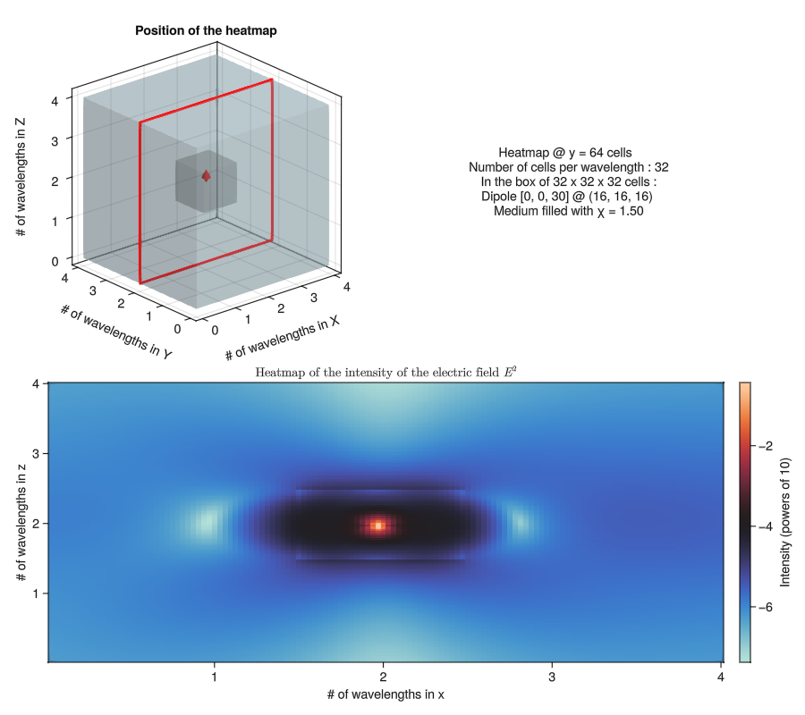
This image represents the exact physical case with the numeric values presented above in the xz plane. For clarity and since the intensity is strictly positive, the color scales logarithmically. In addition, the real part of the electric field vector in every Cartesian direction, respectively $E_x$, $E_y$, $E_z$, for this same system is shown here :
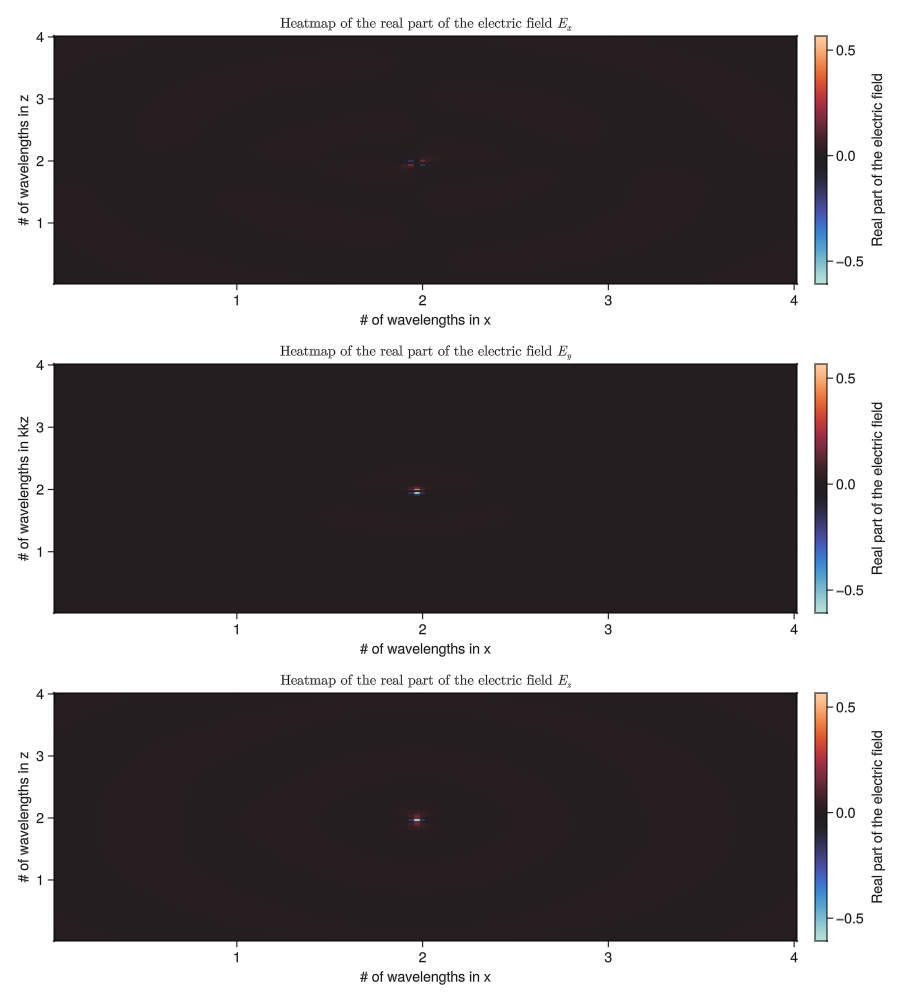
As it can be seen, the values of the electric field at the dipole saturate the colour map. To see more clearly the behaviour of the field as it gets further away from the dipole, the same figures were made but with the plane of visualization further away from the dipole, at dst_slice = 70 :
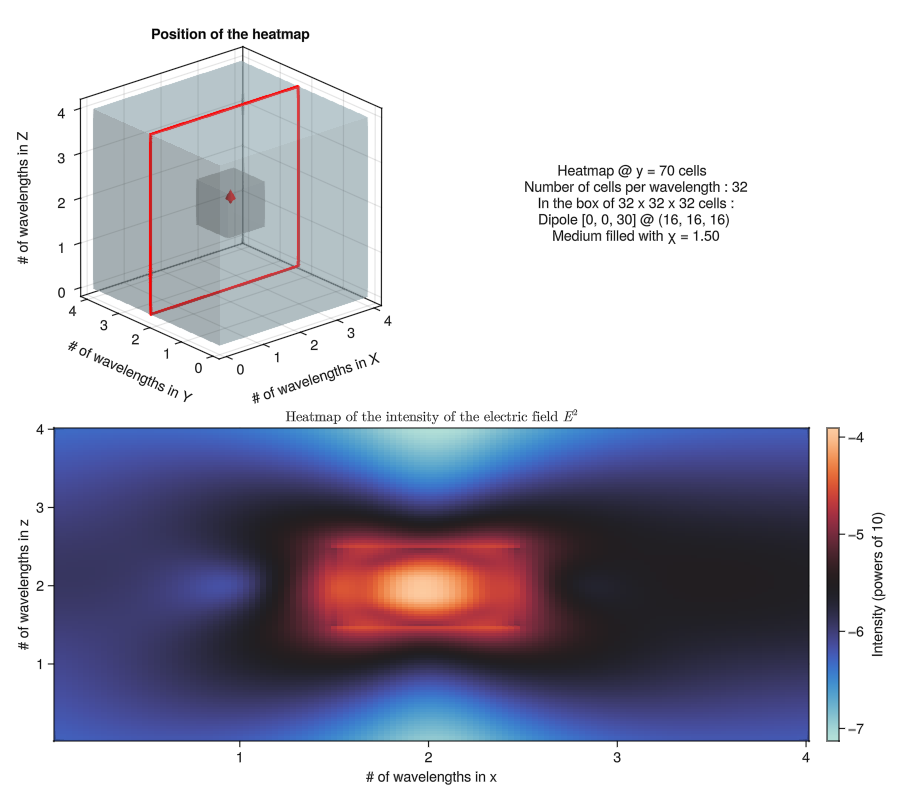
For the real part at this distance of visualization:
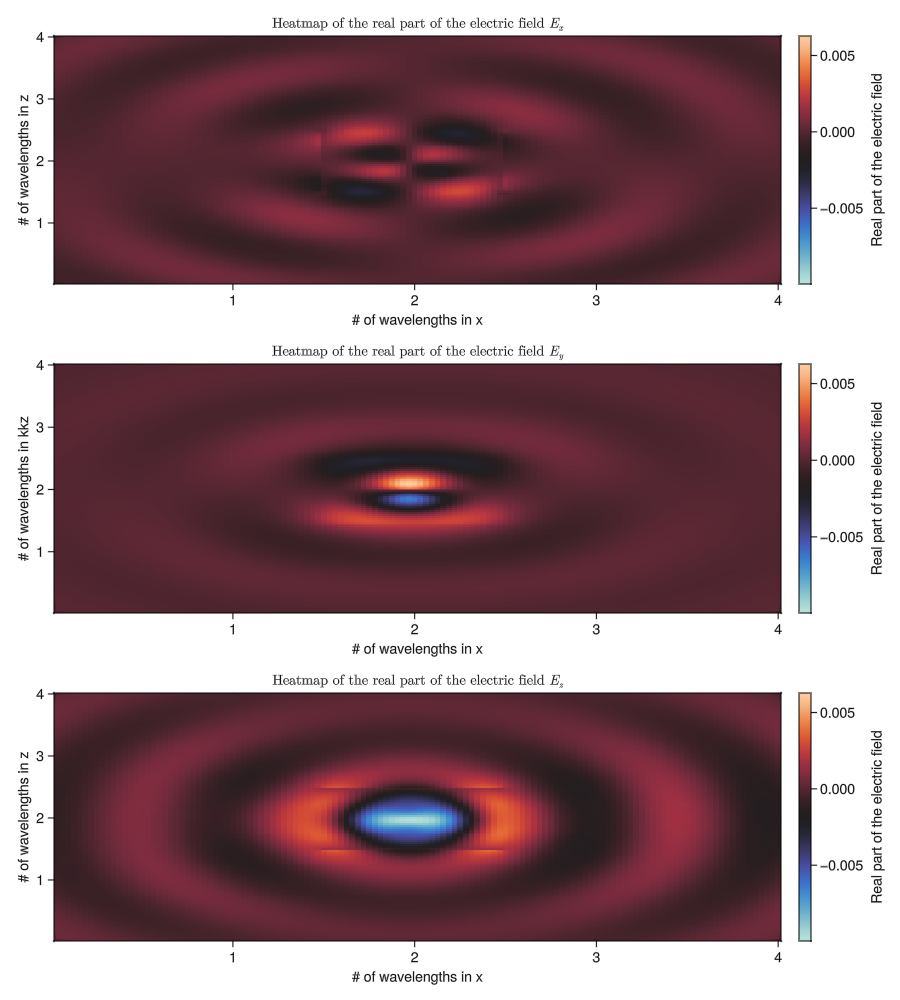
The decay of the field with the behaviour on the edge of the cube is as expected.
Dipole in a wave guide
Similarly, the second example shows an electric dipole located in a wave guide. The same process of embedding the dielectric in a bigger space will be used.
Volume and medium
Very similarly to the cube, we define relevant physical quantities, with more granularity on the dimensions of the volumes. The embedding position of the dielectric in vacuum is predetermined here, where the position_guide variables give the number of cells between the beginning of the guide and the relevant plane crossing the origin :
# dimensions of guide
num_cellsx = 256
num_cellsy = 34
num_cellsz = 34
# dimensions of space
num_cellsx_vac = num_cellsx
num_cellsy_vac = 256
num_cellsz_vac = 128
cells_per_wavelength = 32
# location of guide (only intended for guide along x)
position_guide_y = 110
position_guide_z = 55
# medium
χ_fill = ComplexF32(1.5 + 0im)
# source
pos_x = 50
pos_y = 16
pos_z = 16
dip_x = 0
dip_y = 0
dip_z = 10
# visualisation
dst_slice = 135
slice_id = "xz"As specified in a comment, this prepares a wave guide along the x-axis only, but the program can be modified for any direction.
Decay and loss at boundaries
An important detail must be addressed before solving for the electric field. A key difference with the cube example is that the dielectric goes all the way to the edges of the defined volume. A conventional wave guide would be normally treated under an approximation of infinite length, because its length is much bigger than the size of its cross-section. Here, the edges prevent this approximation, because the computation treats them as a medium-vacuum interface.
To massively reduce the impact of this interface, we can introduce a gradual decay of $\Re(\chi)$, which makes the transition from dielectric to vacuum much smoother, reducing reflection effects in the guide. In addition, we can gradually introduce loss in the medium, by increasing $\Im(\chi)$ when approaching the boundary.
The following function scales the decay with a $\tanh$ function, going from $\Re(\chi)\times\tanh(3)$ to $\Re(\chi)\times\tanh(-3)$ as the boundary approaches. This decay happens on a length determined by the parameter decay_length given in number of wavelengths. Similarly, loss is introduced on this same length proportionally to $x^2$, going from $\Im(\chi) = 0$ to $\Im(\chi) = 0.1$ :
function medium_decay_tanh!(cells, χ, χ_fill, d)
for i in 1:d
χ[d-i+1, :, :, :] .= (χ_fill / 2) * ( tanh((6/d) * (-i + (d/2))) + 1 ) + ( (0.1/(d^2))*((i-d-1)^2) )im
χ[cells[1] - d + i, :, :, :] .= (χ_fill / 2) * ( tanh((6/d) * (-i + (d/2))) + 1 ) + ( (0.1/(d^2))*((i-d-1)^2) )im
end
endApplying this function to the already defined medium will greatly help the simulations to have intended results everywhere except where the decay and loss happens. In these locations, the fields should simply vanish.
A typical function returns something, while a function! modifies one or more of it's input variables. The ! is Julia convention to indicate this fact.
As an example, medium_decay_tanh! modifies the χ variable directly. Some functions in Gila use this convention, notably egoOpr! and other internal functions.
Solutions
Solving for the field is just like the cube case, with the addition of the decay function. A script to obtain it would look like this :
# solving in the dielectric
cells = (num_cellsx, num_cellsy, num_cellsz)
scale = (1//cells_per_wavelength, 1//cells_per_wavelength, 1//cells_per_wavelength)
coord = (0//1, 0//1, 0//1);
χ = fill(χ_fill, num_cellsx, num_cellsy, num_cellsz)
decay_length = 1
medium_decay_tanh!(cells, χ, χ_fill, decay_length * cells_per_wavelength);
ls = LippmannSchwinger(cells, scale, χ; set_type=ComplexF32)
p_i = zeros(eltype(ls), num_cellsx, num_cellsy, num_cellsz, 3)
p_i[pos_x, pos_y, pos_z, :] = [dip_x, dip_y, dip_z]
p_t = solve(ls, p_i)
# embedding in empty space
cells_vac = (num_cellsx, num_cellsy_vac, num_cellsz_vac)
end_guide_y = position_guide_y + num_cellsy - 1
end_guide_z = position_guide_z + num_cellsz - 1
p_t_vac = zeros(ComplexF32, num_cellsx, num_cellsy_vac, num_cellsz_vac, 3)
p_t_vac[:, position_guide_y:end_guide_y, position_guide_z:end_guide_z, :] .= p_t
G_0_vac = load_greens_operator(tuple(cells_vac...), scale; set_type=ComplexF32)
e_t_vac = G_0_vac * p_t_vacWe can now visualize the field in the guide with heatmaps, with the viewed plane slightly away from where the dipole is so that the gradient of colour is less saturated:
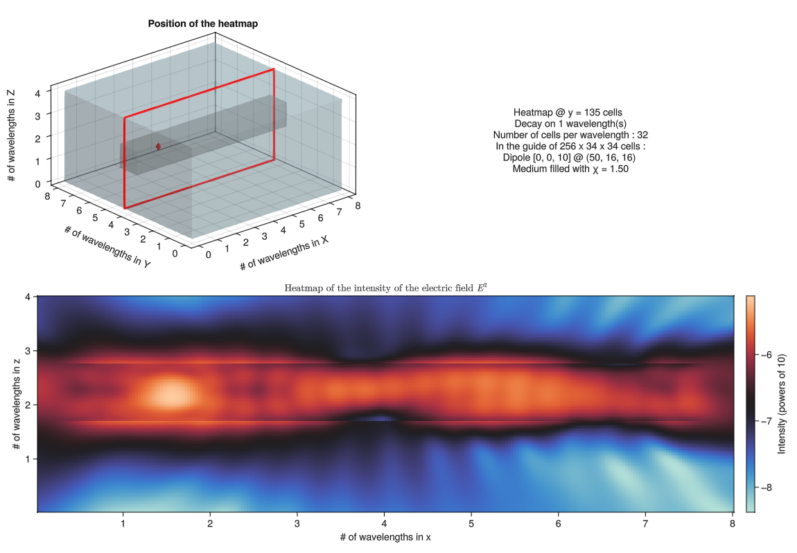
For the real parts:
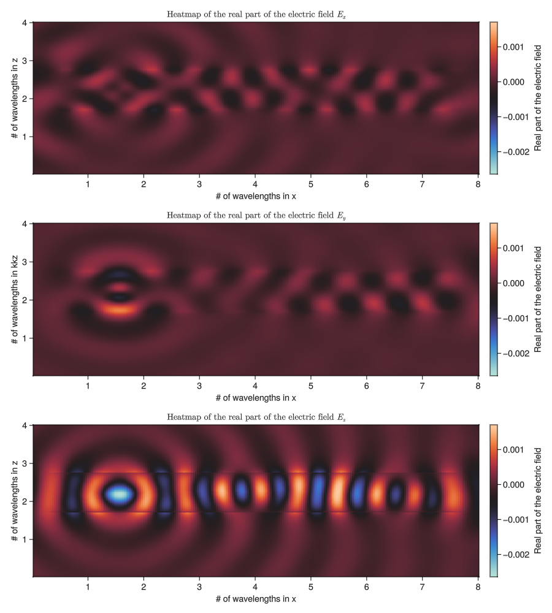
We can also analyze the field in the yz plane to see how it leaks out of the guide:
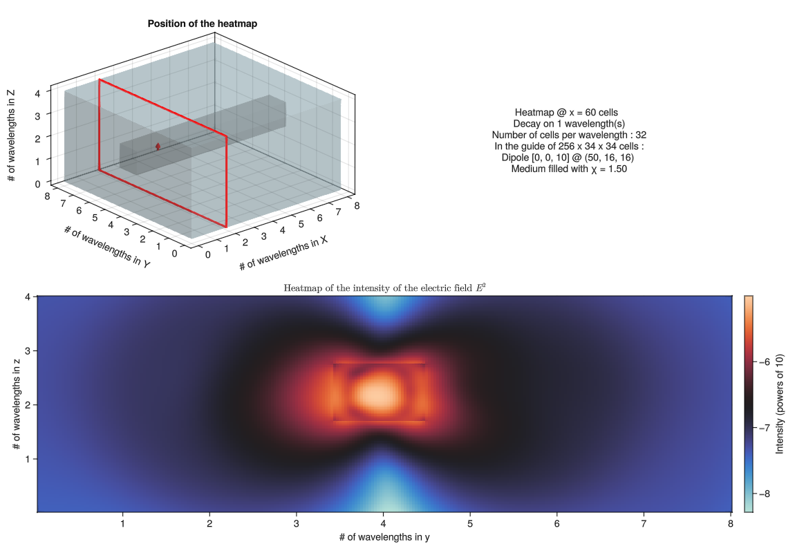
And finally, for the real parts:
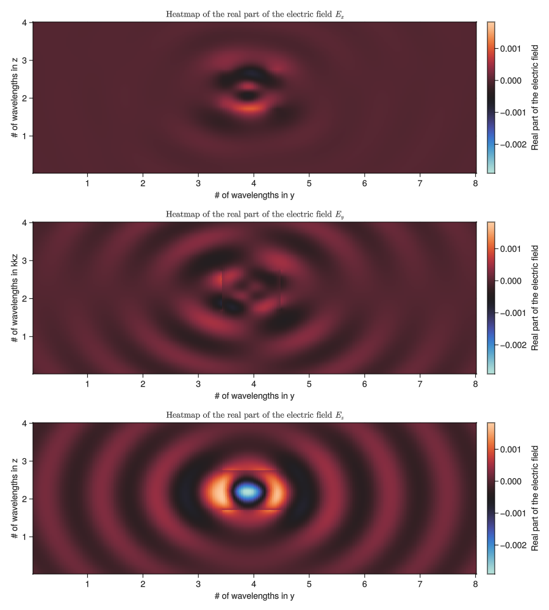
Incident wave on a thin film
As the final example, we will analyze the behaviour of a plane wave hitting a thin film of dielectric. The general process is still the same, but the treatment of the wave itself is worth discussing.
Volume and medium
We define the information on the volume and the medium with the following variables:
# dimensions
num_cellsx = 256
num_cellsy = 256
num_cellsz = 24
num_cellsz_vac = 128
cells_per_wavelength = 32
# medium
position_film = 52
χ_fill = ComplexF32(1.5 + 0im)
decay_length = 1
# visualisation
dst_slice = 128Because the film goes all the way to the edges of the volume, we need to apply decay and loss again, but this time for two directions. The following function accomplishes this as it was described for the guide:
function medium_decay_tanh!(cells, χ, χ_fill, d)
for i in 1:d
χ[d-i+1, :, :, :] .= (χ_fill / 2) * ( tanh((6/d) * (-i + (d/2))) + 1 ) + ( (0.1/(d^2))*((i-d-1)^2) )im
χ[cells[1] - d + i, :, :, :] .= (χ_fill / 2) * ( tanh((6/d) * (-i + (d/2))) + 1 ) + ( (0.1/(d^2))*((i-d-1)^2) )im
end
for i in 1:d
for x in 1:cells[1]
if real(χ[x, d-i+1, 1, 1]) > real((χ_fill / 2) * ( tanh((6/d) * (-i + (d/2))) + 1 ))
χ[x, d-i+1, :, :] .= (χ_fill / 2) * ( tanh((6/d) * (-i + (d/2))) + 1 ) + ( (0.1/(d^2))*((i-d-1)^2) )im
χ[x, cells[2] - d + i, :, :] .= (χ_fill / 2) * ( tanh((6/d) * (-i + (d/2))) + 1 ) + ( (0.1/(d^2))*((i-d-1)^2) )im
end
end
end
endElectric field
We need to create a function that generates a plane wave, and then use it to define the initial polarization current density required to use the solver. An electric wave can be described as the following :
\[\textbf{E} = \textbf{E}_0 e^{i(\textbf{k}\cdot\textbf{r}-ωt)}\]
where the amplitude of $\textbf{E}_0$ describes the amplitude of the wave, its direction dictates the direction of the electric field (the polarization of the wave), $\textbf{k}$ is the wave vector which dictates both wavelength and the direction of the wave front, $\textbf{r}$ represents a point in space, and $ωt$ represents a phase factor that will be set to 0 arbitrarily going forward.
We will do heatmaps in xz, and purposefully use a wavevector coplanar to this plane. This is only for the sake of representation, as any wave vector would work. We will also arbitrarily choose an s-polarized wave, where the direction of the electric field is perpendicular to the plane (field along y). This is all set up in the following function which gives the electric field at a point:
function electric_field(x, y, z, dir_i, dir_j, dir_k, amp, ω=0, t=0)
k = normalize([dir_i, dir_j, dir_k])
if abs(k[3]) != 1
v = [0, 0, 1] # use z-axis if k is not aligned with z
else
v = [0, 1, 0] # use y-axis if k is aligned with z (would not be s pol. anymore)
end
# Field perpendicular to the plane containing k and the z axix (s pol.)
E0 = amp * normalize(cross(k, v))
return E0 * exp(1im * (dot(2π*k, [x, y, z]) - ω * t))
endwhere the amp variable was introduced to control the amplitude of the electric field. This function is also intended to have the same wavelength as what's defined by cells_per_wavelength. We can now set up different memory elements as we did previously:
cells = (num_cellsx, num_cellsy, num_cellsz)
scale = (1//cells_per_wavelength, 1//cells_per_wavelength, 1//cells_per_wavelength)
coord = (0//1, 0//1, 0//1);
χ = fill(χ_fill, num_cellsx, num_cellsy, num_cellsz)
medium_decay_tanh!(cells, χ, χ_fill, decay_length * cells_per_wavelength);
ls = LippmannSchwinger(cells, scale, χ; set_type=ComplexF32)Recall the following equation for linear, non-dispersive and isotropic dielectric :
\[\textbf{p}_i = \chi \textbf{e}_i\]
With for loops and this equation applied cell per cell, we can easily obtain the initial polarization current density from the electric field:
# wave vector (is normalized later)
k_i = 1.0
k_j = 0.0
k_k = -2.0 # negative value looks better, not mandatory
amp = 3.0
p_i = zeros(eltype(ls), num_cellsx, num_cellsy, num_cellsz, 3)
# p_i = χ*e_i at every cell of the dielectric
@time for x in 1:num_cellsx
for y in 1:num_cellsy
for z in 1:num_cellsz
p_i[x, y, z, :] = real(electric_field((x-1) + coord[1], (y-1) + coord[2], (z-1) + coord[3], k_i, k_j, k_k, amp)) * χ[x, y, z, 1]
end
end
endThis allows to solve for the total field with the solver and Green's operator:
# solving
p_t = solve(ls, p_i)
# embedding
cells_vac = (num_cellsx, num_cellsy, num_cellsz_vac)
end_film = position_film + num_cellsz - 1
p_t_vac = zeros(ComplexF32, num_cellsx, num_cellsy, num_cellsz_vac, 3)
p_t_vac[:, :, position_film:end_film, :] .= p_t
# obtaining fields
G_0_vac = load_greens_operator(tuple(cells_vac...), scale; set_type=ComplexF32)
e_t_vac = G_0_vac * p_t_vacWe are now ready to plot heatmaps of this wave. Starting with different information and the intensity:
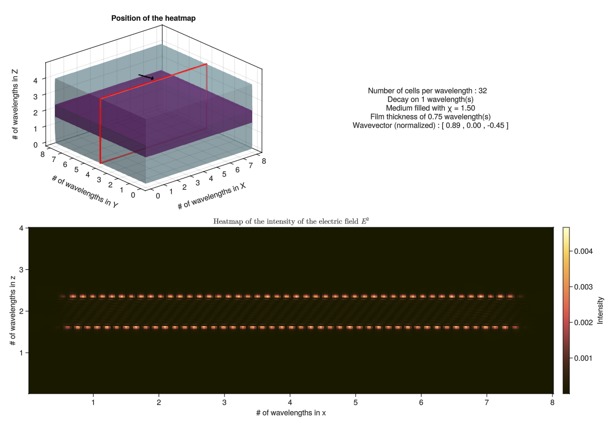
And then, the real parts of the field:
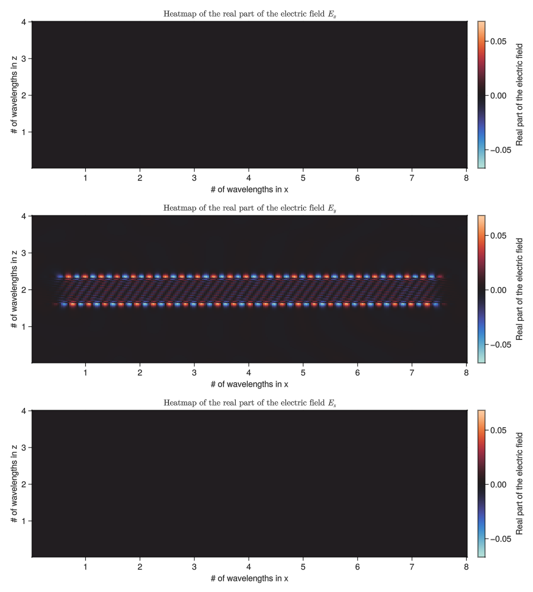
As intended, most of the field is contained in the y direction because of the initial s-polarisation. However, a lot more confinement of the field in the field is observed, and the values aren't very high. This is a consequence of the decay and the loss introduced. If we reproduce the same system but without introducing them, we can observe the following. For the intensity:
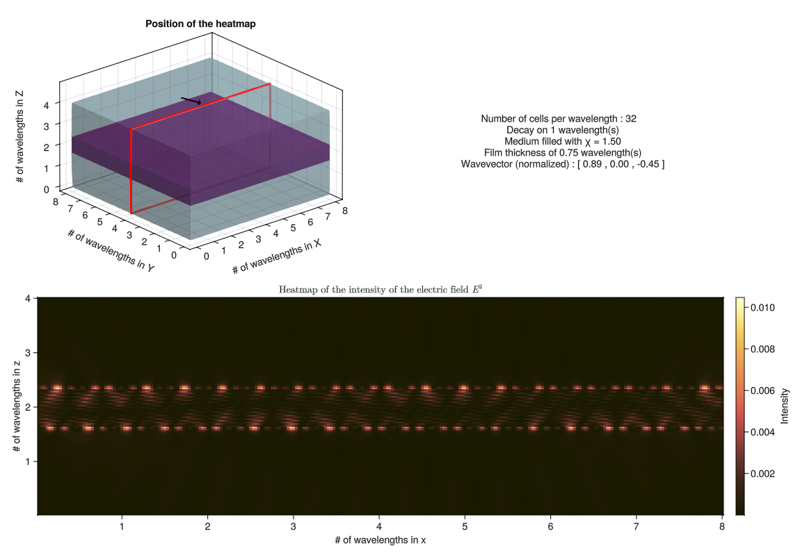
For the real parts:
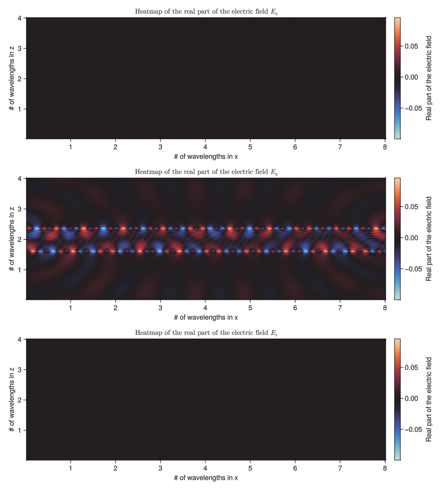
This is less representative of how thin films would behave in real life, but it shows nicely how the loss "hides" parts of the field. A way to have realistic behaviour without suppressing the field would be to simulate a much bigger film and to exclude the edges from the visualization, but this is quite computationally expensive.
Different angle
We can try to simulate a wave that glances the film at a very low angle. Phenomena of total internal reflection should be recognizable. Changing the values of the wave vector, we obtain:
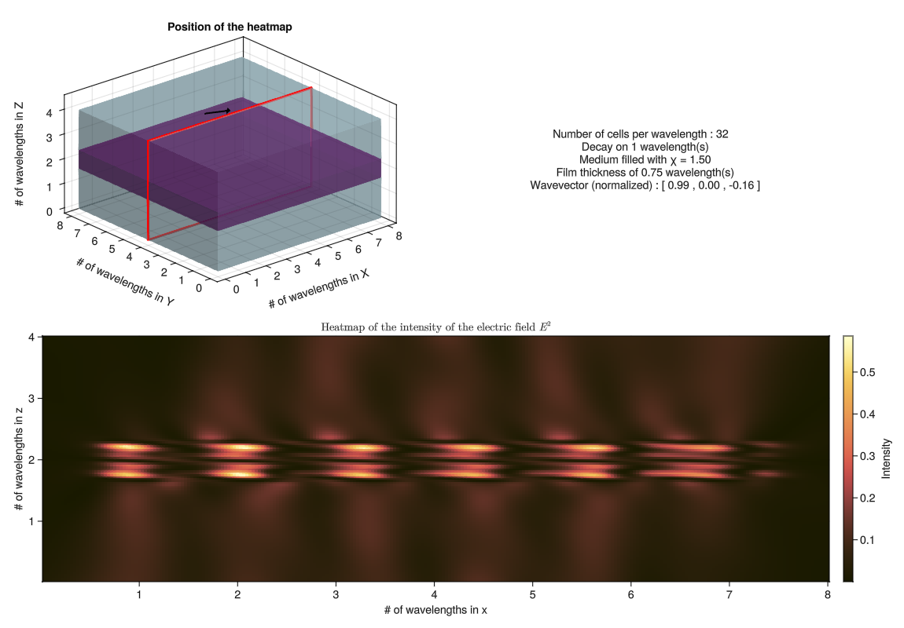
Finally, the real values of the electric field are:
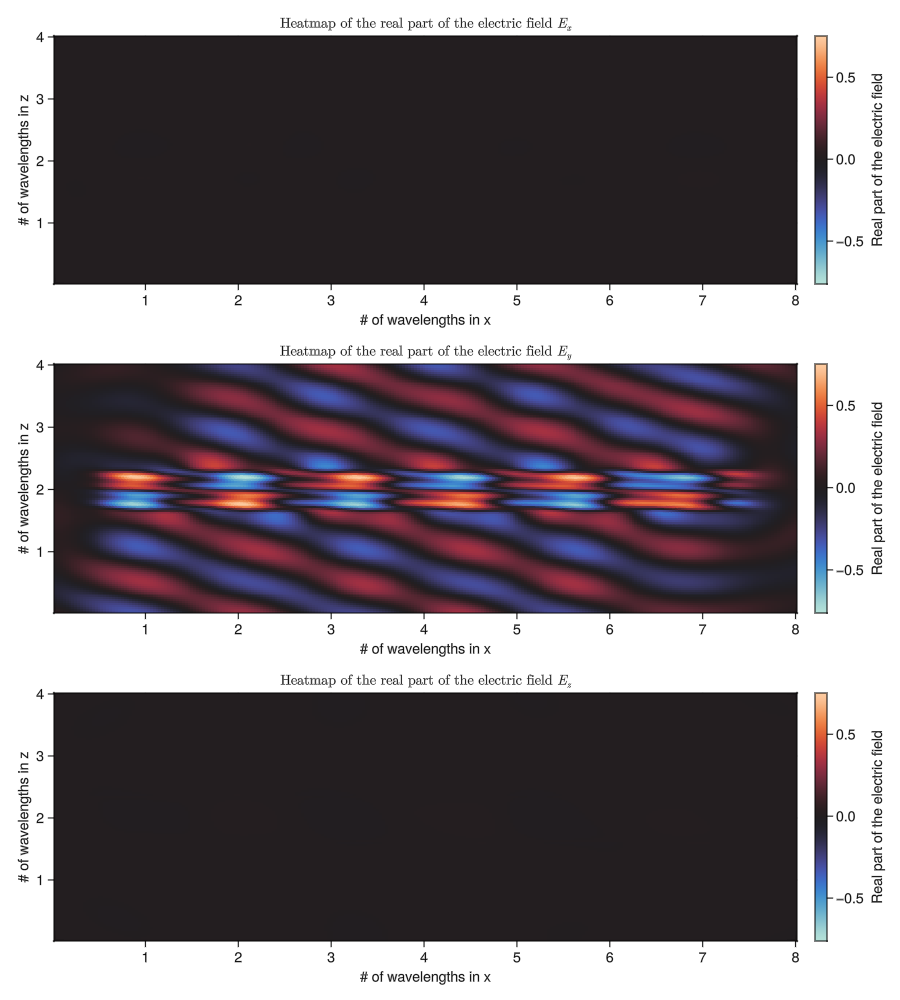
We can indeed see a reflected wave. Its odd look on both sides is due to the small size of the simulated system and to the definition of the wave. The way it's formulated, the initial field exists on both sides of the film at the beginning, which makes it behave not exactly like a wave front at the contact of a dielectric film would. Still, expected behaviour is there, and it is a good showcase of the abilities of Gila on solving different systems.
GPU example
Finally, even though the solver is not yet implemented with it, here is a short showcase on how such a simulation would be treated with computation on a CUDA enabled GPU. Most of the program stays the same, but the operators need to have their use_gpu parameter set to true:
ls = LippmannSchwinger(cells, scale, χ; set_type=ComplexF32, use_gpu=true)
G_0_void = load_greens_operator(tuple(cells_void...), scale; set_type=ComplexF32, use_gpu=true)In addition, the initial polarization current density needs to be converted to a CuArray in order to be treated correctly by the solver:
p_t = Array(solve(ls, CuArray(p_i)))This would result in the total electric field variable e_t_vac to be of type CuArray also. In order to do further data analysis with it, it could be necessary to convert it back to a regular array by simply using Array(e_t_vac). Right now, using CUDA to load Green's operators is working and a good way to save compute time.